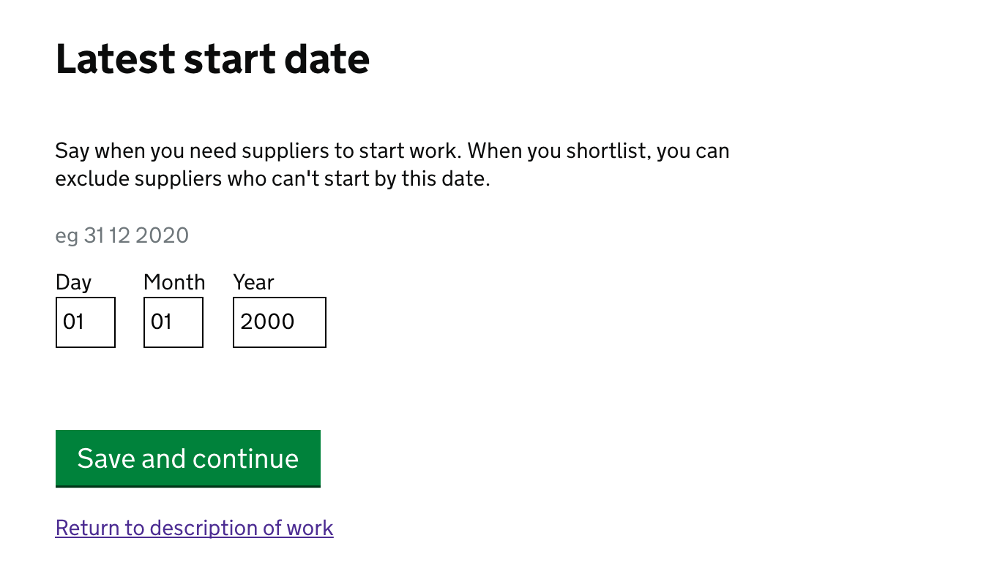
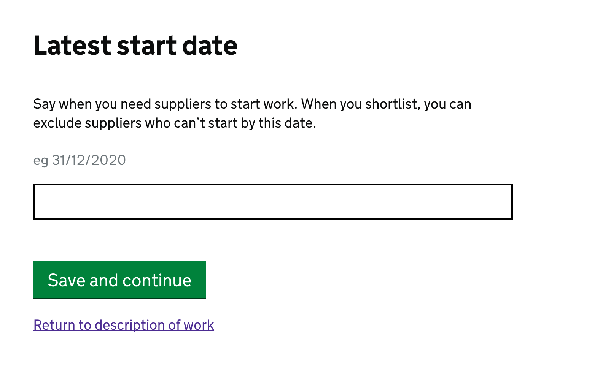

Warning
This section has been left in because it is a useful exposition of the content loader, however as of 2018 developers should not be looking at adding new form field types to the Digital Marketplace frontend without
looking at whether the GOV.UK design system has the same or equivalent field type
reviewing whether the content loader is the best place to add that field type.
Adding a new form field type¶
Contents
Purpose¶
The purpose of this page is to aid in the addition of new form field types to our existing form infrastructure.
There are several parts to adding a new form field type and this page will aim to explain, through examples, how and why each step is necessary. As such it may also be useful as an introduction to frameworks, content loading, and form validation, amongst other things.
Intro¶
This page was started on the 4th of April 2017 having pushed to review the addition of a new 3-part date type field:
This was designed to replace the old, free-text date field:
This meant making changes in a load of places.
How this all works¶
How content pages are built¶
For a more in depth look at how content is loaded see the frameworks readme
Essentially both the frontend apps (ie digitalmarketplace-buyer-frontend, digitalmarketplace-supplier-frontend or digitalmarketplace-admin-frontend) and the api (digitalmarketplace-api) use the content in the frameworks repo. The frontends use it to display content and to understand form field types. The API uses it to validate incoming data.
The frontend apps use it through the content loader which is an
interface which pipes the YAML into python
objects representing content chunks (messages, questions, or
sections).
The content loader is instantiated when the apps start up, grabs the
content from frameworks, and sits waiting to be accessed. It is
instantiated in, and should be imported from, each of the respective apps’
app/__init__.py.
In the api we have a manual step of converting the YAML to a JSON Schema which is used to validate incoming question/ answer pairs.
How to¶
You’re going to (at least) need to:
Add a new data handler/s for your new question type (In digitalmarketplace-content-loader)
Add a new template and shortcut macros for your new field type (In digitalmarketplace-frontend-toolkit)
Add a form macro with the same name as your new field in the given frontend app
Update some YAML to make use of your new field (In digitalmarketplace-frameworks)
Use a script to process the updated YAML and create a JSON schema (To be dumped into digitalmarketplace-api)
Adding a new data handler¶
This pull request digitalmarketplace-content-loader/pull/36
demonstrates the addition of a date handler.
Predominantly the addition of the Date(Question) and
DateSummary(QuestionSummary) classes are what are important here.
To add a new field type you’ll likely be expecting the information
from the form to be in a different format from that of a regular text
field.
To that end you’ll want to define a Question class and override
the get_data method to act as an interface between the
information that is returned in the POST data and the information
you pass to the JSON validator.
In the case of the date field we needed to take data from the POST
that was in 3 fields (a day textbox, month textbox and year textbox)
and join them before passing to the validator.
Our get_data looked like this:
class Date(Question):
...
def get_data(self, form_data):
"""
Incoming form data for this field looks like:
{
myDate-day: '25',
myDate-month: '12',
myDate-year: '2007',
someOtherQuestion: 'foo'
}
the return should be:
{myDate: '2007-12-25'}
"""
field_names = self.id + suffix for suffix in ['-year', '-month', '-day']
return {self.id: '-'.join([form_data[i] for i in field_names])}
Now you have an interface between the POST and the validator
you’ll need one going the other way. This is achieved with the
unformat_data method:
class Date(Question):
...
...
def unformat_data(self, data):
"""
Incoming data for this field looks like:
{myDate: '2007-12-25'}
the return should be:
{
myDate-day: '25',
myDate-month: '12',
myDate-year: '2007',
}
"""
field_names = self.id + suffix for suffix in ['-year', '-month', '-day']
return zip(dict(field_names, data[self.id].split('-')))
As mentioned above the content loader will use these formatters to put the date into questions, sections and messages.
Adding templates and macros¶
This step adds the actual field HTML amongst other things.
The pull request for adding the actual HTML and Sass for the date field is here digitalmarketplace-frontend-toolkit/pull/325 and is actually fairly self explanatory. Following the existing naming conventions you’ll want to add the different macros for display in tables etc.
You’ll likely want to add an scss file, html file, some named macros for content and table display, and an entry in the ‘pages builder’ manual.
Adding a form macro¶
You’ll notice that the macro in the above PR uses a file called
toolkit/forms/date.html. That is the file which sets out what a
date field should look like in HTML. The macro is just a way of
passing question information to that file.
To make templates more reusable we specify just that we want a question rendered then allow Jinja2 to work out exactly how from the question type on the question.
As long as there is a macro in a frontend repos
app/templates/macros/toolkit_forms.html file which corresponds to
the questions type attribute it will be rendered using said macro.
The pull request adding the date macro to the buyer frontend is here digitalmarketplace-buyer-frontend/pull/469
Updating the YAML and creating the JSON¶
In the frameworks repo firstly you’ll want to make sure the we can generate a valid json-schema for the api. The api json-schema is what the api uses to validate incoming question/ answers.
So the generator knows what to do for your field you’ll want to add a
property for it which will be inserted as a validation rule
against all instances of your new field type.
For the date field this was done in schema_generator/validation.py
This is also a good time to make changes to your existing questions or add your new question that will be using the new type. See the full PR for more digitalmarketplace-frameworks/pull/413
Once this has all been updated then run:
python scripts/generate-validation-schemas.py --output-path=../digitalmarketplace-api/json_schemas
to update the validation schemas in the api repo. See digitalmarketplace-api/pull/563
Top Tips¶
Because this process touches so many branches I’d suggest keeping very detailed notes on version number bumps, and what’s being included where.
I’d also suggest not putting up PRs until you’re sure they’re as ready as possible.
Make a detailed deployment plan of what you want to merge, when. And what order everything needs to go in.
Please update here with anything you find, or add, and with any corrections you want to make.